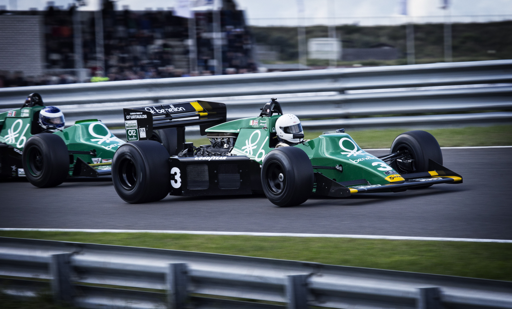

Hi! My name is Rishav Kumar and I am a freshman at The University of Georgia. I am majoring in Management Information Systems and taking 15 hours this semester. Coding and business are two areas I find really interesting so it seemed like the perfect choice. I first discovered my passion for Computer Science in high school when on a request by a teacher I signed up for AP Computer Science A. Some friends were taking it as well so I considered it to just be an easy, fun class. I excelled throughout the year but I started to notice around me that algorithms could be used to solve many problems in my life. So I created calculators for my GPA and schedulers to keep me on track for my work. I began to realize how powerful computer science could be with a business background so I started to dive deeper. I learned SQL, Python, Java, Javascript, and HTML and CSS. I also learned how to create apps through Swift, Apple's language and began developing websites on the side for my community for experience. In my senior year, a couple friends and I developed a reservation system for study rooms in our high school and we gave it to our librarians as a gift before we graduated. CS is a fantastic skill but combined with business to create an elegant problem solving solution, that is when CS reaches its true potential.
CS doesn't take up my entire life, however. I am an avid Atlanta Falcons fan (please never mention last year's super bowl around me) and played football in middle school and part of high school. I played QB, the quarterback and focused on helping my team score. Besides football, I love to play soccer with friends and run. However, my favorite activity is racing. I am a major follower of Formula 1, a high speed racing league that travels around the world to race at some of the most exotic circuits. There are 20 races in a season from March to November. Locations range from Austin to Monaco to Singapore. I inherited this passion from my father and his father. Both raced cars and motorcycles when younger in India for money and soon became avid racers. Although I can't afford to race professionally like my idols, I hope that one day I'll be able to have that opportunity.
 |